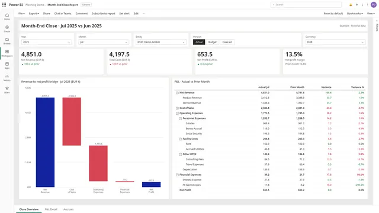
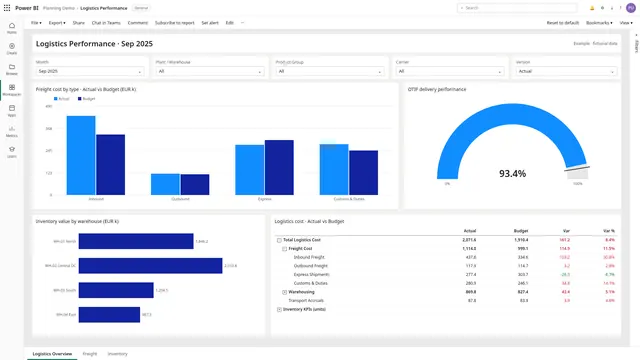
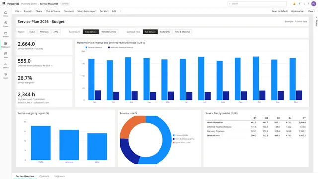
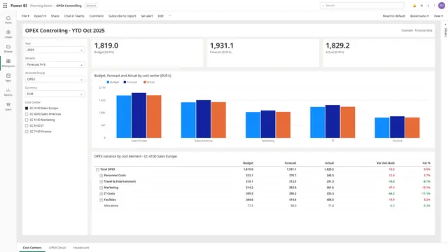

Month-end close
Close cut in half, from 8 to 4 days
Estimated impact
- Jedox
- Snowflake
- Power BI
- Qlik Sense
- Excel VBA
Case studies
Typical scenarios from finance teams running on folders of Excel workbooks, and the estimated impact of connecting planning and reporting.

Close cut in half, from 8 to 4 days
Estimated impact

Monthly pack in 2 days, OTIF visible on day 2
Estimated impact

Annual plan in half the time, forecast deviation from ±8% to ±3%
Estimated impact

Forecast round across 120 cost centers in 5 days, not 10
Estimated impact